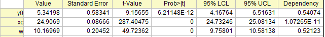
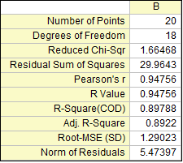
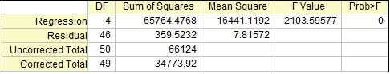
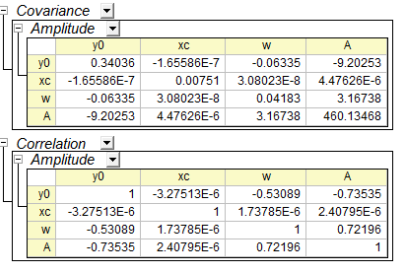
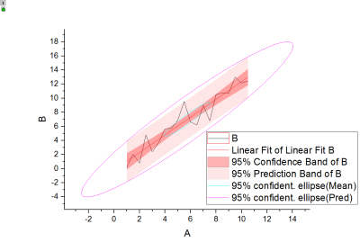
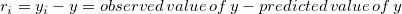
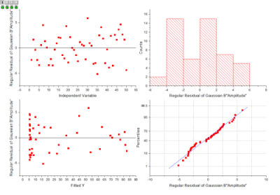

Interpretieren von Regressionsergebnissen
Interpret-Regression-Result
Die Regression wird häufig verwendet, um die Linie mit der besten Anpassung zu berechnen. Wenn Sie eine Regressionsanalyse durchführen, erzeugen Sie ein Analyseberichtsblatt, das die Regressionsergebnisse des Modells beinhaltet. In diesem Artikel wird erläutert, wie die wichtigen Ergebnisse der Regression schnell und einfach interpretiert werden können.
Parametertabelle
Die angepassten Werte werden in der Tabelle Parameter aufgeführt, wie unten zu sehen:

Wert
Geschätzte Werte für jeden Parameter der besten Anpassung, die die Kurve am engsten an den Datenpunkten verlaufen lassen
Standardfehler
Die Parameterstandardfehler kann uns einen Eindruck von der Genauigkeit der angepassten Werte geben. Normalerweise sollte der Betrag der Standardfehlerwerte niedriger sein als die angepassten Werte. Wenn die Standardfehlerwerte größer sind als die angepassten Werte, kann das Anpassungsmodell überparameterisiert sein.
t-Wert
Wahrsch.>|t|
Ist jeder Term des Regressionsmodells signifikant? Oder trägt jede Prädiktorvariable etwas zur Antwort bei? Die t-Tests für Koeffizienten beantworten diese Art von Fragen.
Die Nullhypothese für den t-Test eines Parameters ist, dass dieser Parameter gleich Null ist. Wird die Nullhypothese nicht verworfen, wird die entsprechende Prädiktorvariable als nicht signifikant betrachtet, was bedeutet, dass sie wenig mit der Antwortvariable zu tun hat.
Der t-Test kann auch als Erkennungshilfsmittel verwendet werden. In der polynomialen Regression zum Beispiel können wir ihn zum Bestimmen der geeigneten Ordnung des polynomialen Modells verwenden. Wir fügen Terme höherer Ordnung hinzu, bis ein t-Test des neu hinzugefügten Terms andeutet, dass er nicht signifikant ist.
-
t-Wert: Die Teststatistik für den t-Test
- t-Wert = Angepasster Wert/Standardfehler, zum Beispiel ist der t-Wert für y0 5,34198/0,58341 = 9,15655.
- Für diesen statistischen t-Wert wird üblicherweise ein Vergleich mit einem kritischen t-Wert eines gegebenen Konfidenzniveaus
 (normalerweise 5%) herangezogen. Wenn der t-Wert größer als der kritische t-Wert ist (
(normalerweise 5%) herangezogen. Wenn der t-Wert größer als der kritische t-Wert ist ( ), kann man sagen, dass es eine signifikante Differenz gibt.
), kann man sagen, dass es eine signifikante Differenz gibt.
- Wahrsch.>|t| ist jedoch einfacher zu interpretieren. Wir empfehlen, dass Sie den t-Wert ignorieren und nach Wahrsch>|t| bewerten.
-
Wahrsch.>|t|: Der p-Wert für den t-Test
- Wenn Wahrsch.>|t| < (normalerweise 5%), bedeutet dies, dass wir ausreichend Beweise haben, um H0 des t-Tests zu verwerfen. Je kleiner Wahrsch.>|t|, desto unwahrscheinlicher ist es, dass der Parameter gleich Null ist.
UEG und OEG (Parameterkonfidenzintervall)
OEG und UEG, das obere und untere Konfidenzintervall des Parameters, kennzeichnen, wie wahrscheinlich das Intervall den wahren Wert enthält. Im obigen Bild der Tabelle Parameter sind wir zum Beispiel zu 95 % sicher, dass der wahre Wert des Versatzes (y0) zwischen 4,16764 und 6,51631 liegt sowie die wahren Werte des Zentrums (x0) zwischen 24,73246 und 25,08134 und die wahren Werte der Breite (w) zwischen 9,75801 und 10,58138 liegen.
Abhängigkeit
Der Abhängigkeitswert, der aus der Varianz-Kovarianz-Matrix berechnet wird, verweist typischerweise auf die Signifikanz des Parameters in Ihrem Modell. Wenn einige Abhängigkeitswerte zum Beispiel nah bei 1 liegen, könnte dies bedeuten, dass es eine gegenseitige Abhängigkeit zwischen diesen Parametern gibt. Anders ausgedrückt ist die Funktion überparameterisiert und der Parameter ist womöglich redundant. Beachten Sie, dass Sie Beschränkungen vornehmen sollten, um sicherzustellen, dass das Anpassungsmodell bedeutungsvoll ist. Informationen hierzu finden Sie in diesem Abschnitt.
Statistiktabelle
Die statistischen Schlüsselwerte der linearen Anpassung werden in der Tabelle Statistik aufgeführt, wie unten zu sehen:

Summe der Fehlerquadrate
Die Summe der Fehlerquadrate wird mit RSS (Residual Sum of Squares) abgekürzt. Es handelt sich hierbei um die Summe der Quadrate der vertikalen Abweichungen von jedem Datenpunkt zur Anpassungslinie der Regression. Sie können rückschließen, dass Ihre Daten perfekt angepasst sind, wenn der Wert der RSS gleich Null ist. Diese Statistik kann hilfreich sein, wenn die angepasste Regressionslinie ein guter Fit für Ihre Daten ist. Im Allgemeinen kann man sagen, dass je kleiner die Summe der Fehlerquadrate ist, desto besser passt Ihr Modell Ihre Daten an.
Skalierungsfehler mit Quadrat (Reduziertes Chi-Quadrat)
Der Wert des reduzierten Chi-Quadrats ist gleich der Summe der Fehlerquadrate geteilt durch den Freiheitsgrad. Normalerweise bedeutet ein Wert des reduzierten Chi-Quadrats nahe bei 1 ein gutes Anpassungsergebnis. Er weist darauf hin, dass die Differenz zwischen den beobachteten Daten und den angepassten Daten im Hinblick auf die Fehlervarianz konsistent ist. Wenn die Fehlervarianz überschätzt wird, ist der Wert des reduzierten Chi-Quadrats kleiner als 1. Für eine unterschätzte Fehlervarianz ist der Wert viel größer als 1. Beachten Sie, dass die korrekte Varianz im Anpassungsprozess für das reduzierte Chi-Quadrat ausgewählt werden muss. Wenn die Y-Daten beispielsweise mit einem Skalierungsfaktor multipliziert wurden, wird auch das reduzierte Chi-Quadrat skaliert. Nur wenn Sie die Fehlervarianz auch mit einem korrekten Faktor skalieren, wird der Wert des reduzierten Chi-Quadrats in einen normalen Wert zurückverwandelt.
Pearson r
Pearsons Korrelationskoeffizient, bezeichnet als Pearsons r, kann dabei helfen, die Stärke der linearen Beziehung zwischen gepaarten Daten zu messen. Der Wert von Pearsons r ist beschränkt auf den Bereich zwischen -1 und 1. In der linearen Regression weist ein positiver Wert von Pearsons r darauf hin, dass es eine positive lineare Korrelation zwischen der Prädiktorvariablen (x) und der Antwortvariablen (y) gibt, während ein negativer Wert von Pearsons r darauf hinweist, das eine negative lineare Korrelation zwischen der Prädiktorvariablen (x) und der Antwortvariablen (y) besteht. Der Wert von Null zeigt, dass es keine lineare Korrelation zwischen den Daten gibt. Außerdem gilt, je näher der Wert an -1 oder 1 liegt, desto stärker ist die lineare Korrelation.
R-Quadrat (COD)
R-Quadrat, auch als Determinationskoeffizient (COD) bezeichnet, ist ein statistisches Maß zur qualitativen Bewertung der linearen Regression. Es ist ein Prozentanteil der Variation der Antwortvariablen, der durch die angepasste Regressionslinie erklärt wird. Das R-Quadrat zum Beispiel lässt vermuten, dass das Modell ca. mehr als 89% der Streuung in der Antwortvariablen erklärt. R-Quadrat muss demnach zwischen 0 und 1 liegen. Wenn R-Quadrat 0 ist, weist es darauf hin, dass die angepasste Linie die Streuung der Antwortdaten um ihren Mittelwert nicht erklärt; ist R-Quadrat dagegen 1, weist dies darauf hin, dass die angepasste Linie die gesamte Streuung der Antwortdaten um ihren Mittelwert erklärt. Allgemein kann man sagen, je größer R-Quadrat, desto besser passt die angepasste Linie Ihre Daten an.
Kor. R-Quadrat
R-Quadrat kann verwendet werden, um zu bewerten, wie gut ein Modell die Daten anpasst. R-Quadrat wird immer größer, wenn ein neuer Prädiktor hinzugefügt wird. Es ist Missverständnis, dass ein Modell mit mehr Prädiktoren eine bessere Anpassung bietet. Das Kor. R-Quadrat ist eine modifizierte Version von R-Quadrat, die für die Anzahl der Prädiktoren in der angepassten Linie ausgerichtet ist. Daher kann zum Vergleichen der angepassten Linien mit unterschiedlichen Anzahlen von Prädiktoren verwendet werden. Wenn die Anzahl der Prädiktoren größer ist als 1, dann ist das korrigierte R-Quadrat kleiner als R-Quadrat.
ANOVA-Tabelle
Wie die Regressionsgleichung die Variabilität in den y-Werten berücksichtigt, wird in der ANOVA-Tabelle beantwortet, wie unten zu sehen:

F -Wert
Der F-Wert ist ein Verhältnis von zwei mittleren Quadraten, die berechnet werden können, indem das mittlere Quadrat des angepassten Modells durch das mittlere Fehlerquadrat geteilt wird. Der F-Wert des Modells oben ist zum Beispiel 65764,4768/16441,1192=2103,59577. Es ist eine Teststatistik, um zu testen, ob das angepasste Modell sich signifikant von dem Modell y = konstant unterscheidet, das eine flache Linie mit einer Steigung gleich Null ist. Es kann rückgeschlossen werden, dass je mehr dieses Verhältnis von 1 abweicht, desto stärker ist der Beweis, dass das angepasste Modell sich signifikant von dem Modell y = konstant unterscheidet.
Wahrsch.>F
Wahrsch.>F ist ein p-Wert für den F-Test, das heißt eine Wahrscheinlichkeit mit einem Wert zwischen 0 und 1. Wenn der p-Wert für den F-Test kleiner ist als das Signifikanzniveau (normalerweise 5%), dann kann geschlussfolgert werden, dass das angepasste Modell sich signifikant von dem Modell y = konstant unterscheidet. Dies lässt darauf rückschließen, dass das angepasste Modell eine nichtlineare Kurve oder eine lineare Kurve mit einer Steigung ist, die sich signifikant von 0 unterscheidet.
| Hinweise: Wenn bei der linearen Regression der Schnittpunkt mit der Y-Achse bei einem bestimmten Wert festgelegt wird, ist der p-Wert für den F-Test nicht bedeutungsvoll und unterscheidet sich von dem in der linearen Regression ohne die Nebenbedingung des Schnittpunkts mit der Y-Achse. |
Kovarianz- und Korrelationstabelle
Die Beziehung zwischen den Variablen kann der Kovarianz- und Korrelationstabelle entnommen werden, wie unten zu sehen:

Kovarianz
Der Kovarianzwert indiziert die Korrelation zwischen zwei Variablen und die Matrizen der Kovarianz in der Regression zeigen die Zwischenkorrelationen unter allen Parametern. Die diagonalen Werte der Kovarianzmatrix gleichen dem Quadrat des Parameterfehlers.
Korrelation
Die Korrelationsmatrix skaliert die Kovarianzwerte so, dass sie im Bereich von -1 bis +1 liegen. Ein Wert nahe +1 bedeutet, die beiden Parameter sind positiv korreliert, während ein Wert nahe -1 eine negative Korrelation anzeigt. Ein Wert von Null bedeutet, dass die beiden Parameter völlig unabhängig voneinander sind.
Die angepasste Kurve sowie das Konfidenzband, das Prognoseband und die Ellipse werden im angepassten Kurvendiagramm gezeichnet, wie unten zu sehen. Sie unterstützt bei der Interpretation des Regressionsmodells auf intuitivere Weise.

Das Residuum ist definiert als:

Residuendiagramme können verwendet werden, um die Qualität einer Regression zu bewerten, und befinden sich normalerweise am Ende des Berichts, wie unten zu sehen:

Weiterführende Themen